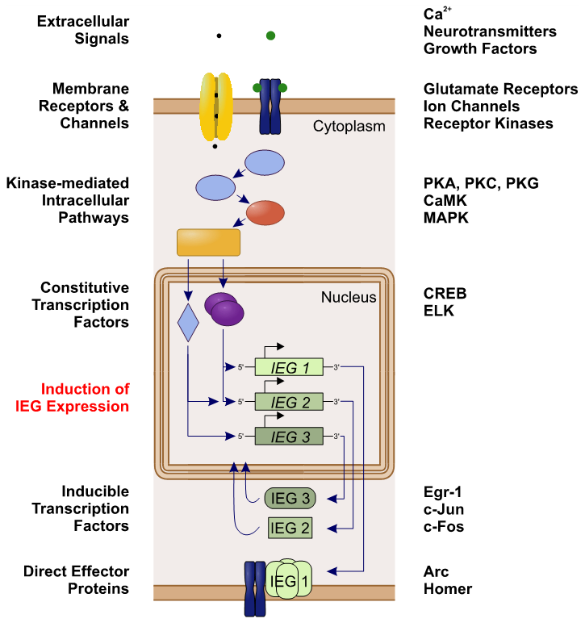

36 조기 유전자와 타겟 유전자
36.1 유전자 수준에서 이해하는 약물의 작용기전
36.1.1 생물학적 환원주의
매순간 일어나는 세포 내 신호전달계의 변동은 이온 채널의 투과성을 변화시켜, 신경망을 흐르는 전기, 화학적 신호를 일시적으로 바꿀 수 있지만, 그 효과는 오래가지 못한다. 좀더 영속되는 변화를 일으키기 위해선 결국 단백질 발현이 뒤따라야만 한다. 신경세포에서 발현되는 단백질은 크게 두 가지로 나눌 수 있다. 첫째, 신경전달물질 수용체, 신경전달물질의 생성, 분비를 조절하는 단백질, 그 밖의 2/3차 메신저와 관련된 단백질 등 신호전달과 관련된 단백질이다. 이들의 양적 변화는 신호전달의 새로운 역치를 설정한다. 둘째, 장기강화 기전 관련 단백질 및 세포골격 단백질 등의 구조 단백질로, 이들은 새로운 수상돌기 간극이나 축삭을 자라나게 만든다. 항정신병 약물을 투여하면 당장은 흥분과 불안을 가라앉히는 정도에 머무르지만, 수 주가 지나면 점차 정신병적 증상 자체가 가라앉기 시작한다. 이렇듯 서서히 찾아오는 치료적 효과는, 신경세포 내부에서 단백질 발현의 변화가 일어났다는, 즉 유전자 수준에서 변화가 시작되었다는 것을 암시한다.
물론 조현병은 사고와 정서 그리고 행동의 질환이다. 이러한 거시적 차원의 현상이 특정 단백질 합성의 촉진이나 억제를 통해 근본적으로 바뀔 수 있다고 인정하는 것은, 생물학적 환원주의1에 대한 전적인 신뢰를 필요로 한다. 물론 환원주의라고 해도 수많은 층위로 나눠질 수 있으며, 연구자에 따라 어느 정도까지의 환원을 수용할 수 있는 지는 큰 차이가 있다. 예를 들어 1) 신경세포를 구성하는 하나하나 단백질의 기능을 이해함으로써 세포 전체의 작용을 이해할 수 있다고 믿는 것과, 2) 각각의 신경세포를 이해함으로써 망상과 환각의 발생기전을 이해할 수 있다고 믿는 것은, 요구되는 믿음의 도약 정도에 있어서 큰 차이가 있다.2 마찬가지로 항정신병 약물이 특정 유전자 발현에 미치는 영향을 통하여, 1) 전전두엽 글루타메이트 신호전달의 변화를 이해할 수 있다고 믿는 것과, 2) 음성 증상에 대한 치료 효과를 설명할 수 있다고 믿는 것 역시 전혀 다른 차원의 환원주의적 명제이다. 어느 수준까지의 환원주의를 수용할 수 있는 지는 독자들의 지식과 경험, 철학에 따라 천차만별이겠지만, 일단 환원주의에 대한 비판과 거부감을 잠시 내려놓고, 항정신병 약물의 궁극적인 효과는 유전자 전사와 단백질 발현 조절에 있다고 가정한 상태에서 논의를 진행하고자 한다.
1 생물학적 환원주의 (biological reductionism): 환원주의란 우주를 이루는 제반 현상은, 원자 혹은 아원자 단위의 입자와 그들 사이의 상호작용을 규제하는 물리법칙에 의해 일어난다고 믿는 것이다. 마찬가지로 생물학적 환원주의는 생명현상이 생물학적 분자들의 상호작용에서 비롯된다고 믿는다. 여기에는 존재론적 환원주의와 인식론적 환원주의가 있다. 전자는 생명현상이 분자들의 물리화학적 상호작용에 “지나지 않는다”는 주장이며, 후자는 진실이 어떤 것인지는 영원히 알 수 없을 지도 모르지만, 인간은 결국 물리화학적 상호작용을 이해하는 길을 통해서만 생명현상을 “알아갈 수 있다”는 주장이다.
2 정신의학에서 존재론적 환원주의를 받아들인다면 자유 의지의 불가능성이라는 문제가 발생한다. 즉 정신이 물리화학적 법칙에 지나지 않는다면 자유 의지란 존재하지 않을 것이다. 하지만 인식론적 환원주의에서는 자유 의지를 부인하지 않는다.
36.1.2 유전자 발현의 조절
“DNA로부터 mRNA가 전사(transcription)되고, mRNA로부터 단백질이 번역(translation)된다”는 분자생물학의 중심 도그마(central dogma)3에 따르면, 단백질 발현이 조절될 수 있는 기회는 1) 전사 과정과 2) 번역 과정 두 군데 밖에 없다. 세포는 일반적으로 전사 과정에 더 정교한 조절 기전을 마련해놓고 있으며, 복잡다양한 전사 인자(transcription factor) 들을 통해 mRNA의 양을 조절한다.
3 분자생물학의 중심 도그마는 많은 오해와 논란의 소지를 낳았다. 1957년 Francis Crick은 “일단 한번 단백질로 흘러간 유전 정보는 다시 끄집어낼 수 없다”고 선언하였다. 즉 아미노산 서열 정보가 다른 단백질을 만드는데 쓰이거나 DNA/RNA를 합성하는데 사용될 수는 없다는 뜻이다. 한편 그의 동료 James Watson은 1965년에 “유전 정보는 DNA는 RNA, 그리고 RNA에서 단백질이라는 일방향으로 흐른다”고 서술하였고, 이것이 보편적인 중심 도그마로 받아들여졌다. 현대 생물학에서 Crick의 주장은 여전히 참이지만, Watson의 설명은 거짓인 것으로 드러났다.
1961년 Jacob4과 Monod5는 대장균이 락토오스 대사에 관련된 효소를 생성할 때 억제성 전사 인자인 lac1을 통해 전사를 조절한다는 것을 처음으로 밝혀내었다.6 인간의 전체 게놈 중 직접 단백질을 코딩하는 유전자는 1~2% 정도일 뿐이다. 비록 유전자를 둘러싸고 있는 일부 DNA 서열에는, 앞서 예를 든 lac1과 같은 promoter, enhancer 등이 작용하는 부위가 있어 전사 과정을 섬세하게 조절하는데 기여하고 있지만, 나머지 95% 이상의 DNA는 아직도 기능을 잘 모른다. 그러나 연구가 거듭될수록 점점 비코딩 염기 서열7의 중요성이 부각되고 있으며, 이들이 또 다른 방식으로 전사를 조절하고 있을 가능성이 제기되었다.[1] 가장 대표적인 예가 후성유전학적 조절(epigenetic regulation)이며, 그 밖에도 선택적 스플라이싱(alternative splicing), 전사 후(post-transcriptional) 및 번역 후 변형(post-translational modification), 마이크로 RNA (microRNA)8 등이 여기에 속한다.[2]
4 François Jacob (1923~2013): 프랑스의 생물학자. 박테리아가 외부 환경 변화에 대응하여, 유전자 전사를 조절함으로써 효소 양을 변화시키는 세부 과정을 밝혔다. 이 이론을 오페론(operon) 이론이라고 한다.
5 Jacques Monod (1910~1976): 프랑스의 생화학자. 오페론 연구로 1965년 François Jacob과 함께 노벨 생리의학상을 수상하였다.
6 Operon theory: operone은 일련의 구조적 유전자로 operator에 의해 발현이 조절된다. 반면 일련의 조절 유전자는 repressor를 발현하는데, 생성된 repressor는 operator에 붙어 operon의 전사를 억제한다.
7 비코딩 염기 서열(non-coding sequence): 아미노산 연쇄(단백질)의 신호를 담고 있지 않은 나머지 모든 DNA. 과거에는, 진화의 긴 역사를 통해 지금은 필요가 없어진 염기서열이 제거되지 않고 누적된 것이라 생각하여 junk DNA라고 부르기도 하였다. 그러나 연구가 거듭될수록 정교한 전사 조절에 관여하고 있다는 것이 밝혀지고 있다.
8 마이크로 RNA (miRNA): 번역이 되지 않는, 즉 단백질을 코딩하지 않는 짧은(22 base 안팎) RNA이다. 상보적 서열을 지닌 mRNA와 결합하여 번역을 막아버리기 때문에, 단백질 합성의 양을 조절한다.
항정신병 약물은 이 모든 조절 과정에 영향을 미칠 수 있으며, 궁극적으로 단백질 발현 양을 변화시킨다. 항정신병 약물은 내인성 리간드가 아니라 인공 화합물이기 때문에 전자가 지닌 섬세함을 기대할 수는 없지만, 그렇다 해도 결과적으로는 치료에 도움이 되는 방향으로 단백질 발현을 유도할 것으로 믿어진다. 단백질 발현은 매우 역동적이어서, 상황에 따라 시시각각 변하기 때문에, 단순히 많고 적고가 아니라 1) 어떤 단백질들이 서로 어울려 발현되는지를 말해주는 발현 패턴, 2) 외적 변화에 대한 반응 양상, 3) 시간 경과에 따른 시계열적 변화가 의미있는 연구 대상이 될 것이다. 이러한 면에서 현재까지의 연구는 아쉬운 점이 많다. 횡단면적인 패턴까지는 상당한 진전이 있었으나, 반응성이나 시간 변화에 대해선 방법론 상의 어려움때문에 만족할만큼 진행되지 못하고 있다.
논문을 읽다보면, “조현병 환자에서 A라는 유전자 발현이 대조군보다 많거나 적기 때문에, 유전자 A가 취약 유전자일 것이다”라는 식의 고찰을 흔히 접하게 된다. 비슷한 예로 1) “항정신병 약물이 유전자 A의 발현을 변화시키니까, A가 조현병의 취약 유전자일 것이다”라던가, 2) “약물이 이전 연구를 통해 취약 유전자로 알려진 유전자 B의 발현을 조절하니까, 이 약물은 유전자 B를 통해 효과를 나타낼 것이다”는 식의 주장이 흔하다. 그러나 이를 액면그대로 받아들이기는 곤란하다. 이런 식의 주장이 받아들여지려면, 해당 유전자 발현이 동물 모델에서 어떤 효과를 낳는 지, 그리고 그 효과는 조현병이라는 큰 맥락에서 어떤 위치를 차지하는 지가 입체적으로 평가되어야 한다. 이러한 전후 관계를 찾아내지 못하면, 특정 유전자에 대한 비특이적 효과가 치료적인 것인지, 부작용을 일으키는 요인인지, 아니면 별 의미없는 우연일 뿐인지 절대로 구분할 수 없다. 분자생물학 차원에서 항정신병 약물에 대한 연구가 심도깊게 진행되었음에도 불구하고, 아직 조현병 이해에 큰 파장을 일으키지 못한 것은 바로 이러한 어려움 때문이다.
36.2 초기 유전자
초기 유전자(immediate early gene)란 외적 자극에 즉각적이고 일시적으로 대응하는 몇가지 특별한 유전자들을 가리킨다. 유전자 수준에서의 세포 반응은 초기 반응과 후기 반응으로 나뉘며, 먼저 활성화되는 초기 유전자들이 후기 반응을 이끌어내는 식으로 작동한다. 따라서 초기 유전자를 “유전체 반응의 관문(gateway to the genomic response)“이라 부르기도 한다. 일반적인 유전자는 전사와 번역 과정을 거치는 데 상당한 시간이 걸리기 때문에, 면역 반응이나 스트레스 대응, 학습/기억과 같이 즉각적 반응이 필요한 상황에서는 순발력이 떨어지며, 따라서 이러한 역할들은 초기 유전자에게 맡겨진다.9
9 초기 유전자들이 어떻게 이렇게 신속하게 반응할 수 있는 지에 대해선 몇 가지 이론이 제기되고 있다. 아마도 해당 단백질이 항상 일정 농도 이상으로 생성/유지되고 있다가, 자극이 유입되면 단백질 변형(protein modification)을 통해 기능 수준을 급격히 변화시킬 수 있을 것이다. 그렇지 않으면 mRNA들이 분해되지 않고 일정 수준 이상으로 유지되고 있다가, 즉시 단백질로 번역되는 것도 가능할 것이다.
가장 먼저 발견된 초기 유전자들은 c-fos, c-myc, c-jun 등10으로, 이들은 동시에 원발암 유전자(proto-oncogene)로 분류되고 있다.(Section 35.3.2) 바이러스에 의해 유발되는 암11을 연구하던 연구자들은, 바이러스 유전자에 대응하는 염기 서열이 이미 인간 세포 내에 존재하며, 세포가 환경변화에 대응할 때 가장 먼저 이들의 농도가 변화한다는 것을 발견하였다. 이렇게 해서 발견된 초기 유전자들은 원발암 유전자라는 불명예를 얻었지만, 신경 세포의 흥분, 단기 및 장기 기억 형성에도 깊숙이 관여한다는 것이 밝혀지면서, 암 연구 뿐 아니라 신경과학 연구에 있어서도 매우 중요해졌다.
10 c-fos, c-myc, c-jun와 같은 소문자 이탤릭체 표기는 원래 세포 내 단백질을 가리키지만, 동시에 해당 유전자를 의미하기도 한다. 엄밀한 형식을 따르면 초기 유전자는 대문자로 시작하여 c-Fos, c-Myc, c-Jun이라 써야 옳으며, “c-”를 생략하여 FOS, MYC, JUN이라 쓰기도 한다.
11 레트로 바이러스(혹은 역전사 바이러스)가 세포에 침입하면 가장 먼저 바이러스의 특정 DNA 조각을 숙주 DNA에 끼워넣어 단백질을 만들어내며, 이 단백질들이 숙주 세포의 증식과 분화를 제어하는 메카니즘을 혼란에 빠뜨려 세포를 불멸화시키기 때문에 암이 발생한다.
초기 유전자 산물들은 대부분 전사 인자(transcription factor) 역할을 하는 DNA 결합 단백질들이지만, 그 외에도 소포체를 구성하는 단백질, 세포 골격 단백질, 어댑터 단백질 (Section 35.3.1), 신호전달물질 생성 효소 등 갖가지 종류가 있다. 특히 이들이 신경계에서 장기 강화와 신경가소성에 관여한다는 것은 꼭 기억해야 한다. NMDA 수용체를 통해 기억과 학습이 일어난다는 큰 그림이 그려졌지만, 정작 어떤 신호가 어떻게 전달되어 새로운 수상돌기 간극(dendritic spine)의 형성으로 이어지는지는 아직도 모르는 부분이 많다. 바로 이 과정에 Arc, HOMER, EGR과 같은 초기 유전자들이 핵심 역할을 한다.
학습과제를 수행하는 동물의 뇌에서 NMDA 수용체를 통해 Ca2+이 유입되면 Arc, c-fos 그리고 egr-1와 같은 초기 유전자 들이 반응하기 시작한다. 특히 Arc mRNA의 농도는 신경세포의 활성 정도와 깊은 상관관계를 보인다. 연구자들은 이에 착안하여, 이들 초기 유전자의 작동을 인위적으로 억제하거나 유도함으로써, 동물 모델에서 공포 기억의 형성을 차단하거나 거짓된 기억을 삽입하는데 성공하였다.[3] 한걸음 더 나아가 광유전학적 조작12을 이용하면 특정 부위의 신경세포에 대해서만 초기 유전자 발현을 억제/유도하는 것이 가능하다. 이를 이용하면 기억이 형성될때 어느 뇌 부위의 어떤 초기 유전자가 활성이 변하는지 그 경로를 추적할 수도 있다.13[7,8]
12 광유전학(optogenetic)적 조작: 생체 분자 중에는, 망막에 있는 rhodopsin 처럼 자연적으로 빛에 반응하는 단백질이 있다. 이러한 단백질을 통털어 opsin이라 하는데, 세포주나 동물 모델에서 유전자 조작을 통하여 원하는 단백질(주로 이온채널)에 opsin을 부착시킬 수 있다. Opsin을 발현시킨 모델에 빛을 가하면, opsin과 연결된 채널의 기능이 활성화되는데 이를 통해 해당 채널의 기능을 연구할 수 있다. 혹은 이미 기능을 알고 있는 채널이라면, 빛을 비추어 원하는 반응을 유도할 수 있다.
13 광유전학적 기술은 있는 기억을 삭제하거나, 거짓 기억을 삽입하는데 사용될 수 있는 가능성을 지니고 있다.[3] 윤리적으로 문제가 될 소지가 있지만, 기억을 조작하는 기술은 조현병 치료에도 응용될 여지가 있다.[4,5] 이런 기술들이 가능해지는 시대가 도래하면 정신치료의 모습도 지금과는 많이 달라질 것이다.[6]
이런 식으로 초기 유전자는, 환경적 자극에 대응하여 개체가 신속한 반응을 보일 수 있도록 돕는다. 혹자는 초기 유전자의 대응 현상을 신경세포의 전기적 활동전위(action potential)에 빗대어 “유전체 활동 전위(genomic action potential)“라고 부르기도 한다.[9] 전기적 활동전위가 수상돌기를 통해 유입되는 자극들을 통합하여 다음 신경세포로 신호를 전달할 지 말지를 결정하는 것처럼, 유전체 활동 전위는 유입 자극을 좀더 시간을 들여 통합한 후 일사불란한 유전적 대응을 하도록 지휘한다.
이처럼 신경세포의 제반 기능에 광범위하게 관여하다보니, 초기 유전자와 조현병의 관계 역시 인내심 많고 창의적인 연구자들에 의해 탐색되어왔다.[10] 그 결과 다양한 항정신병 약물 및 전기경련 치료가 초기 유전자 시스템에 적지 않은 영향을 미친다는 것을 알게 되었다.[11,12] 좋게 해석하면 섬세한 조정이지만, 나쁘게 이야기하면 무질서한 혼돈을 초래하는 셈이다. 아마도 초기 유전자에 대한 영향을 짚고 넘어가지 않는 한, 항정신병 약물이 어떻게 신경망에 구조적 변화를 일으키는지 이해하기는 어려울 것이다.
항정신병 약물에 의해 활성이 변화한다고 밝혀진 초기 유전자에는 c-Fos와 c-Jun을 비롯하여 Arc, EGR, Delta-fos, HOMER, Nur 등이 있다. c-Fos, c-Jun은 기억/학습과 관련된 신경세포의 활성을 추적할 수 있는 비특이적 표지자로 많이 이용된다. Nur 계열 유전자는 도파민 신경세포 발달 과정을 조절하며, Arc와 EGR 은 장기 강화에 직접적으로 관여한다. HOMER는 뼈대 단백질로서 신경세포 활성에 맞춰 수상돌기의 구조를 재정렬해주는 역할을 한다. 각각의 항정신병 약물과 초기 유전자 발현과의 관계에 대해서는 de Bartolomeis 등[12]의 종설을 참고하기 바란다.

Fig. 2 Intracellular activation cascade of immediate early genes (IEGs; left column) and examples of involved molecules and molecule classes (right column). Extracellular signals activate via membrane receptors and channels a series of intra- cellular biochemical pathways. Kinases then mediate the activation of constitutively expressed transcription factors that initiate the expression of IEGs. Protein products of IEGs can act either as inducible transcription factors to orchestrate the expression of downstream genes, or as direct effector proteins with implications in cell physiology and signaling
36.2.1 c-Fos, c-Jun
가장 먼저, 그리고 가장 널리 알려진 초기 유전자는 c-Fos와 c-Jun이다.[14] c-fos와 c-jun은 서로 결합하여 activator protein-1 (AP-1)이라는 전사 인자를 생성한다. AP-1은 발달중인 세포에서는 증식과 분화를 유도하지만, 신경세포에서는 장기 강화를 시작할지 말지를 결정한다.[15]
몇몇 연구자들은 조현병 환자에서 c-fos나 c-jun의 양이 정상 대조군에 비해 변화되어 있음을 관찰하였다.[16–18] c-fos는 기억 형성과 관련된 신경세포 활성도를 반영하며[19], 조현병 환자는 흔히 기억력 장애를 보이기 때문에 이론적 연결 고리를 맺을 수 있다. 그러나 이들 단백질의 양은 살아있는 환자의 혈액과 사후 뇌조직에서 크게 차이나며, 그 밖에 많은 외적 요인의 영향을 받기 때문에, 기억력 정도를 충실히 반영한다고 보기는 어렵다.[20] NMDA 길항제인 MK-801을 투여했을 때 오히려 c-fos 발현이 급격히 증가하는 것도 해석을 어렵게 하는 요인 중 하나이다.[21] 일부 연구자는 c-Fos 유전자 내에 위치하는 단일염기다형성인 rs1063169와 rs7101T가 조현병과 연합 관계에 있다고 주장하였으나, 후속 연구가 뒤따라주지 않았다.[18] 아마도 c-Fos, c-Jun을 조현병의 원인 중 하나로 지목하는 것보다는, 단순히 c-fos와 c-jun의 농도를 비특이적인 신경세포 활성의 표지자로 보는 것이 유용할 것이다.
연구자들은 약물이 c-fos 활성을 변화시키는 양상을 추적함으로써, 원인불문하고 활성화되는 뇌 부위를 찾아내고자 하였다. 이를 통해 정형, 비정형 약물이 모두 c-fos 발현을 유도하지만, 그 부위에 차이가 있다는 사실을 알아내었다. Robertson과 Fibiger[22]의 실험에 따르면, 할로페리돌은 등쪽 선조체에서 c-fos 발현을 강하게 유도하는데비해, 클로자핀은 전전두엽과 측중격핵에서 c-fos를 유도하고 등쪽 선조체에는 별로 영향이 없다.14 저자들은, 등쪽 선조체에 대한 효과가 운동 부작용과 관련있을 것이라 믿고, 한동안 c-fos 유도 부위의 차이에 따라 정형/비정형성을 구분하고자 하였다.[23,24] 또 다른 연구자들은 선조체 조직을 이루는 서로 다른 두 구획(striosome과 matrix)15에 대하여, 항정신병 약물의 효과를 따로따로 살펴보았다. 정형 약물은 두 구획 모두에서 c-fos를 유도하였으나, 비정형 약물은 striosome에서만 효과를 나타내었다.[26] 이런 점에서 선조체의 striosome은 기억과, matrix는 운동 기능과 연관된다는 것이 흥미롭다.[27] 비정형 약물이 matrix에 대한 효과가 현저히 적다는 것은 운동 부작용이 적은 이유로 거론되기도 하였다.[26]
14 선조체는 미상핵(caudate nucleus), 조가비핵(putamen) 등으로 구성된 등쪽 선조체(dorsal striatum)와 측좌핵, 후각 결절로 구성되는 배쪽 선조체(ventral striatum)로 나뉜다. 전자는 감각운동신호를 통합하는 역할을 하며 흑질 선조체 경로의 종착역이다. 반면 배쪽 선조체는 중뇌변연계 경로의 종착역이다.
15 선조체은 면역조직학적으로 striosome(혹은 patch)과 matrix라는 두 구획으로 나뉜다. 두 구획은 물리적으로는 서로 구분되지 않고 얽혀 있으나, 특수한 염색을 통해 구별할 수 있다. Striosome에는 도파민을 비롯하여, enkephalin, substance P 등의 농도가 높으며, 반면 matrix에는 도파민 수용체와 아세틸콜린 생성 및 분해 효소의 농도가 높다.[25]
c-jun 역시 AP-1의 또 다른 구성물로서 많은 연구가 진행되었다. 조현병 환자의 사후 뇌를 이용한 연구에서, c-jun이 소뇌에 국한되어 농도가 증가되어 있다는 것이 보고되었다.[16] 전체 유전체 발현 연구(whole genome expression study)에서 c-Fos와 c-Jun은 조현병 환자의 섬유아세포에서 확연히 증가되어 있던 6개의 유전자에 포함되었으나, 혈구 세포에서는 오히려 c-Jun이 감소되어 있는 것으로 나타났다.[17] c-jun N-terminal kinases (JNK)는 MAPK 신호전달계의 최종 공통 경로이다. JNK는 쓸모없게 된 신경세포를 세포자연사로 유도하는 신경퇴행 쪽 역할과, 신경돌기의 확장/성숙 등 신경보호 쪽 역할을 동시에 수행한다.[28] 상당히 모순된 역할을 동시에 떠맡고 있는 것처럼 보이지만, 손상된 신경세포의 운명을 결정짓는다고 보면 이해가 쉽다.
c-fos와 c-jun은 가장 처음 발견되었고 가장 대표적인 초기 유전자였던 만큼, 초창기 연구자들의 단골 연구 소재였다. 그러나 2000년대 이후에는 거의 문헌을 찾아보기 힘들다. 이는 c-fos, c-jun 그리고 이 둘의 결합으로 형성되는 AP-1이 워낙 광범위한 생명 현상에 관여하고 있어서, 조현병 혹은 항정신병 약물에 국한된 효과를 가려내기가 쉽지 않았기 때문이다. 마찬가지로 비정형성을 가르는 주요 기전일 것이라는 기대 역시 만족할만한 답을 주지 못했다.
36.2.2 Nur 계열 유전자
NR4A (nuclear receptor subfamily 4A)는 핵 내부에 존재하는 수용체16이자 전사 인자로, 아직까지 내인성 리간드가 발견되지 않았다. 여기에는 NR4A1 (Nur77), NR4A2 (Nurr1) and NR4A3 (Nor1)가 포함되며 이들을 Nur 계열 유전자라고 하는데, 신경계의 발달 및 유지 그리고 염증 및 면역 기능 조절에 중요한 역할을 한다. 화학적, 물리적 스트레스를 가리지 않고 워낙 많은 외부 환경적 변화에 반응하다보니, 오히려 그 역할과 기능이 베일에 가려져 있다.[29] 하지만 NR4A를 생성하는 세포의 분포가 도파민 시스템과 많이 겹치기 때문에, 조현병과 관련하여 일찍부터 주목을 받아왔다.[30]
16 핵 수용체 (nuclear receptor ): 세포막에 위치한 일반적인 수용체와는 달리, 핵 내부에 존재하는 수용체로 주로 스테로이드, 갑상선 호르몬을 비롯한 특정 물질과 결합한다. 리간드가 결합되면, 수용체의 3차원 구조가 변화하면서 직접 DNA에 결합하여 전사 인자 역할을 한다.
Nur 계열 유전자들은 유해한 자극으로부터 신경세포를 보호하는 역할을 맡고 있는데, 그러면서도 항정신병 약물에 대한 반응은 c-Fos와 매우 닮아있다. c-Fos는 기억과 학습의 맥락에서 주로 다루어지므로 조현병의 인지 기능과 관련되어 논의되는 경우가 많은데 비해, Nur는 신경보호 쪽을 담당하다보니 추체외로 부작용 맥락에서 논의되는 경우가 많다.[31] 긍정적인 쪽이든 부정적인 쪽이든 도파민을 통한 항정신병 약물의 효과를 이해하기 위해선 반드시 짚고 넘어가야할 초기 유전자이다.[12]
NR4A1 (Nur77)은 c-Fos와 마찬가지로 정형 약물을 투여하면 등쪽 선조체에서 발현되며, 클로자핀을 투여하면 주로 전전두엽과 측좌핵에서 발현이 증가한다.[32] 다른 연구에서는 조현병 환자의 사후 뇌조직에서 Nur 계열 유전자들의 mRNA 양을 대조군과 비교하였는데, 셋(Nur77, Nurr1, Nor1) 모두 대조군에 비해 유의하게 감소하였지만, 가장 두드러진 것은 Nur77이었다.[33] Nur77은 추체외로 부작용을 직접 매개할 것으로 짐작되는데, Nur77 유전자를 knock-out 시킨 마우스는 D2 길항제를 주어도 강직증을 일으키지 않는 반면, 인간의 지연성 운동장애에 해당하는 vacuous chewing movements (VCMs)은 오히려 더 현저해진다.[34] Nur77 마우스는 이밖에도 조현병과 유사한 증상을 보이기 때문에 조현병 동물 모델로도 이용된다.[35]
최근에는 Nur77의 염증 관련 작용이 부각되기도 한다. 한 연구에서는 염증 수치가 높은 조현병 환자와 그렇지 않은 조현병 환자, 그리고 대조군에서 Nur77 농도를 비교하였는데, 염증 수치가 높은 조현병 환자는 다른 두 군에 비해 현저히 Nur77 농도가 낮았다.[36]
한편 Nurr1은 특히 흑질과 배쪽 피개 영역에 다량 분포한다. Nurr1의 변이는 조현병의 인지 수행능력과 연관을 보인다.[37] Nurr1 유전자를 한쪽만 결여시킨 이형접합 마우스는 기저핵의 도파민 농도가 높아질 뿐 아니라 조현병의 특징적인 인지 증상을 보이기 때문에 동물 모델로도 이용된다.[38] 동시에 파킨슨 병의 모델로도 활발하게 사용되고 있다.[39]
36.2.3 EGR 계열 유전자
EGR (early growth response protein)에는 EGR-1, EGR-2, EGR-3, EGR-4가 포함되고 있지만, 신경계 기능과 관련하여 가장 많이 연구된 것은 EGR-117이다. EGR-1은 소위 zinc-finger18 전사 인자로서, 다른 초기유전자들과는 달리 암억제 유전자19로 알려져 있다.
17 옛날 문헌에는 Zif268이라고도 표기되어 있다.
18 Zinc finger: 작은 크기의 단백질 모티프(motif)로서 Zn2+에 의해 구조가 안정화된다. 모티프란 다양한 단백질의 3차원 구조에서 반복되어 등장하는 독특한 구조를 일컬으며, 하나의 모티프가 반복되거나 다른 모티프와 어울리면서 전체적인 구조를 이룬다. Zinc finger는 손가락 같은 돌출부가 여러개 튀어나와 있어서 다른 물질에 부착하기 쉽게 되어 있으며, Zn2+에 의해 안정화되지만 반드시 Zn2+이 아니더라도 금속 이온이기만 하면 상관없다.
19 암억제 유전자 (tumor suppressor gene, anti-oncogene): 정상적인 세포에서 세포 증식을 늦추거나, DNA 보수를 담당하고, 세포자연사를 유도하는 유전자들을 가리킨다. 세포에는 암유발 유전자와 암억제 유전자가 모두 존재하며, 절묘한 균형을 이루고 있다.
EGR-1은 원래 우울/불안 장애와 관련하여 다양한 연구가 이루어져 왔다. 이는 EGR-1이 감정적 기억을 형성하는데 중요한 역할을 하며 [40], 스트레스에 처했을 때 보이는 행동을 결정할 때도 깊이 개입하기 때문이다.[41] 우울증 환자의 전전두엽에서 EGR-1의 mRNA 수치가 떨어지는 것은, 동물 모델은 물론 인간 실험에서도 반복되어 확인되었다.[42] 우울증 환자는 스트레스에 대한 회복 탄력성(resilience)이 떨어지기 때문에, EGR-1은 회복 탄력성과 관련된다고 믿어진다.[43] GAD120 mRNA 농도와 강한 상관관계를 보이며, GABA 신호전달의 정도를 결정한다는 것도 이런 추측을 뒷받침한다.[44] 이처럼 EGR-1은 주로 성인의 우울/불안과 관련하여 논의되어 왔지만, 최근에는, 조현병과 관련하여, 태생기 및 출생 초기의 스트레스가 GABA 분비 뉴런의 조직화를 저해하는 과정에 개입되어 있을 것으로 믿어지고 있다.[41,45] 조현병 환자의 혈액에서는 mRNA 수치가 증가되어 있다고 보고되는데[46], 뇌 조직에서의 결과는 불분명하다.[44,47] 항정신병 약물을 사용한 쥐의 뇌에서는 발현이 증가된다고 한다.[48,49] 이런 변화가 약물 효과와 어떤 관련이 있는지는 알려져 있지 않다.
20 GAD1: GABA를 생성하는 glutamic acid decarboxylase 67 (GAD67)을 코딩하는 유전자.
36.2.4 HOMER 계열 유전자
c-fos, c-jun, erg-1 등은 그 자체가 효과를 발현한다기 보다는, 다른 유전자의 발현을 유도하는 중간 매개자 역할을 하지만, Arc와 HOMER는 수상돌기 재정렬이나 장기 강화에 직접 나서서 효과를 발휘한다.[13] HOMER 계열 단백질들은 특히 시냅스후 밀집체(postsynaptic density)에 집중적으로 분포하는 뼈대 단백질21이며, 지금까지 Homer1, Homer2, Homer3가 알려져 있다. HOMER는 글루타메이트 분비 신경세포와 다른 신경세포 간에 원할한 신호전달이 이루어지도록 하며, 수상돌기 간극의 성장을 촉진시켜 구조변화(remodeling)를 도모한다.[50–52]
21 뼈대 단백질 (scaffolding protein): 신호전달에 필요한 여러 단백질들을 끌어당겨 물리적으로 결합할 수 있도록 해주고, 이렇게 만들어진 결합체가 세포 내 특정 위치에 자리잡을 수 있도록 유도하는 단백질을 말한다. 어댑터 단백질(adapter protein)이 두 세개 단백질 사이의 교량 역할을 한다면, 뼈대 단백질은 좀더 많은 수의 단백질이 붙을 수 있는 기판 역할을 한다. 분자량도 뼈대 단백질이 더 크다.
몇몇 유전 연구에서 HOMER 계열 유전자 변이가 조현병 위험을 높이며, 치료반응과도 관계가 있다는 보고가 있었다.[53] 또한 동물 모델에서도 Homer1의 발현이 증가되어 있으며, 항정신병 약물이 발현 양을 조절한다고 알려져 있다.[54,55] Homer1은 짧은 길이의 Homer 1a와 좀더 긴 Homer 1b로 나눌 수 있으며, 조현병 환자의 해마에서 1a/1b의 비율이 크게 증가되어 있다는 보고가 있다.[56] de Bartolomeis 등[55]의 연구에서 ketamine, MK-801 등 정신증상을 유발하는 물질을 투여하면 Arc, c-fos와 함께 Homer 1a의 발현이 유의하게 증가한 반면, Homer 1b는 감소하였다. 반면 역시 NMDA 차단 효과를 지니는 memantine은 Homer 1a/1b의 비율을 낮추는 효과를 보였다. 이러한 결과는 글루타메이트 신호전달을 조절하는 Homer 1a/1b의 균형이 조현병의 발병기전에 연결되어 있음을 시사하며, memantine이 NMDA 차단제이면서도 조현병 환자의 인지 증상을 경감시켜 준다는, 언뜻 이해하기 어려운 역설을 설명하는 단서를 제공해준다.[51]
36.2.5 Arc
Arc/Arg3.1 단백질의 원래 명칭은 activity-regulated cytoskeleton-associated protein으로 해당 유전자는 ARC라고 한다. 이 단백질은 글루타메이트 신호를 받는 시냅스 후 신경세포에서 주로 발현되며, c-fos 보다 좀더 직접적으로 학습/기억에 관여한다. 성인에서는 학습/기억과 관련된 역할을 하지만, 발달 과정에 있는 태아에서는 homeostatic synaptic scaling22, 장기 억제(long-term depression), 시냅스 가지치기(synaptic pruning)을 통해 발달하는 신경망의 미세구조를 정교하게 다듬는 역할을 한다.
22 만약 어떤 뇌 회로가 지속적으로 자극을 받아 오랫동안 활성 상태에 놓이면, 신경세포는 자체적으로 활성 전위의 생성 역치를 조절하여 전기적 활성을 낮추는데 이를 homeostatic synaptic scaling이라고 한다. 이러한 음성 피드백 작용은 세포막의 글루타메이트 수용체 농도를 조절하거나, 수상돌기 간극의 수를 줄임으로써 이루어진다. 신경세포가 변화된 상황에 처해서도 안정적인 신호전달을 할 수 있도록 유지/보수하는데 필수적인 기전이다.[57]
좀더 구체적으로 Arc는 NMDA 수용체 자극에 의해 시냅스후 밀집체에 동원되었던 AMPA 수용체들을 다시 원래 자리로 복귀시켜 활동을 멈추게 한다.[58] 따라서 Arc의 이상은 단순한 건망증으로부터, 치매, 자폐증, 조현병 까지 다양한 정신질환과 관련해서 논의되고 있으며[59], 학습/기억과 관련된 다양한 초기 유전자 들의 기능을 한데 엮어주는 허브 역할을 할 것으로 여겨진다.[60]
Fragile X 증후군은 FMR1 유전자가 기능을 하지 못하여 fragile X mental retardation protein (FMRP)가 만들어지지 못하는 신경발달학적 질환으로 지능 저하를 특징으로 한다. FMRP는 다양한 단백질과 상호작용하며 일괄적으로 조절을 받기 때문에 이들을 합쳐 FMRP regulon이라고도 한다.[61] FMRP의 타겟 단백질들은 조현병 뿐 아니라 우울증, 양극성 장애 등 여러 종류의 정신질환과 유전적으로 연관되어 있는 것으로 알려져 있다.[62] 그런데 Arc는 FMRP의 가장 중요한 타겟 중 하나이다.[58,63]
Arc 유전자와 조현병의 연관은 흥미롭게도 신생 돌연변이(de novo mutation)에서 발견되었다. 2014년 독립된 두 연구팀은, 조현병 환자들의 신생 돌연변이를 조사하던 중 발견된 다수의 변이들이 모두 Arc와 상호작용하고 있다는 공통점을 발견하였다.[64,65] 더군다나 조현병 환자의 전전두엽에서 Arc의 mRNA 농도가 떨어져 있다는 보고[66], ARC 유전자 내부 변이인 rs35900184가 조현병과 연관된다는 보고[67] 등, Arc와 조현병 사이의 연결을 시사하는 증거는 여러가지가 있다.
36.3 항정신병 약물의 타겟 유전자
36.3.1 발현유도 유전자
조현병의 취약 유전자를 찾는 유전 연구에 비해, 항정신병 약물로 인해 발현 정도가 변화되는 유전자, 즉 발현유도 유전자(differentially expressed genes, DEG)를 찾는 연구는 그 수가 극히 적은 편이다.[68–70] 환자의 사후 뇌조직에서 mRNA나 단백질을 정량하는 것이 쉬운 일은 아니며, 살아있는 환자의 혈액에서 측정한 수치는 뇌조직에서의 수치와 차이가 완전히 일치하지는 않기 때문이다. 그러나 연구의 어려움에도 불구하고 약물의 궁극적인 작용 기전을 알고자 한다면, 약물로 인해 발현이 변화되는 유전자를 찾는 과정이 필요하다. 앞 절에서 수용체와 신호전달계를 거쳐 초기 유전자까지 광범위하게 살펴보았지만, 어찌보면 이 모든 단계들은 궁극적으로 특정 유전자 발현을 세밀하게 조절하는 기전들이었을 뿐이다.
항정신병 약물의 타겟 유전자를 찾는 작업은 데이터베이스를 이용한 방법과 직접 실험실에서 발현양을 측정하는 방법이 있다. DrugBank23와 Similarity Ensemble Approach24와 같은 대형 데이터베이스는 약물이 결합할 수 있는 가능한 타겟에 대한 정보를 제공한다. SZGR 2.025은 항정신병 약물에 국한하여, 약물을 투여하였을 때 치료 전과 후의 발현이 유의하게 달라지는 유전자들의 목록을 제공한다.
23 DrugBank: 2006년 캐나다 앨버타 대학의 David Wishart 연구실에서 시작된 온라인 데이터베이스. 학술 논문으로 발표되는 연구 자료를 총집하여, 각종 약물의 화학적, 약물학적 정보와 함께, 약물이 작용하는 타겟의 종류와 화학 구조, 단백질 서열, 경로 등에 대한 정보를 제공한다. 2021년 현재 14,589개 약물에 대한 정보가 실려있다. (https://go.drugbank.com/)
24 Similarity Ensemble Approach (SEA): 리간드와 수용체의 화학 구조 유사도를 바탕으로 약물의 가능한 타겟을 예측하여 그에 대한 정보를 제공한다. (https://sea.bkslab.org/)
25 Schizophrenia Gene Resource 2 (SZGR 2): 각종 유전 연구, 전사체 연구, 후성유전학 연구 등의 자료를 취합하여, 각종 항정신병 약물에 의해 발현량이 유의하게 변화하는 유전자의 목록을 제공하는 서비스.(https://bioinfo.uth.edu/SZGR/)[71]
이상적인 상황이라면 1) 조현병의 취약 유전자와 2) 발현유도 유전자라는 두 개의 집합이 거의 일치해야 하겠지만 현실은 이와 거리가 멀다. 유전자 A 때문에 병이 생겼더라도, 전혀 다른 유전자 B를 통해 치료될 수도 있다. 게다가 발현유도 유전자가 치료에 도움이 되는 것인지, 부작용만 일으키는 것인지도 구분할 길이 없다. 그럼에도 불구하고, 두 집합 사이에서 겹치는 유전자들이 분명히 존재한다. Ruderfer 등[72]은 DrugBank와 SEA 데이터베이스 검색을 통해 항정신병 약물의 타겟을 167개의 유전자 세트로 좁혀놓고, 이들 중에 조현병의 취약 유전자가 얼마나 포함되어 있는지 조사하였다. 그 결과 167개 중 10%는 조현병 위험을 높인다고 알려진 드문 변이(rare mutation)가 일어나는 유전자였으며, 21%는 광범위 유전체 연합 연구(GWAS)에서 찾아낸 흔한 변이(common variant)가 일어나는 유전자였다.
최근 발표된 체계적 문헌고찰[73]에 따르면, 말초 혈액에서 측정하였을 때, 항정신병 약물에 의해 발현이 유의하게 변화되는 유전자는 모두 27개로, 이중 절반이 넘는 16개는 조현병 환자와 대조군 사이에서도 발현 양의 차이가 난다고 알려진 유전자였다.26 예를 들어 AKT1과 DISC1은 잘 알려진 조현병 취약 유전자에 포함되는데[74,75], 이들 유전자의 활성이 증가되어 있던 조현병 환자에게 리스페리돈을 투여하면 수치가 거의 정상 수준으로 회복된다.[76]
26 RPS25, DISC1, SLC2A3, UBD, NRG1, BRCA1, AKT1, MAL, RXRA, CCDC134, ZIC2, NLN, DAAM2, DGCR6, EIF2D 그리고 MMP9
조현병의 발병 기전에 관여하는 것과는 별개로, 발현유도 유전자들은 약물에 대한 반응성을 결정하는데 일익을 담당하고 있을 수 있다. 특정한 유전형 때문에 약물을 투여해도 유전자 발현이 제대로 이루어지지 않는다면, 해당 약물에 대한 치료 반응도 여의치 않으리라고 짐작할 수 있다. Rampino 등[77]은 이러한 질문에 대해 체계적 문헌고찰을 하였는데, 그들이 발견한 항정신병 약물의 타겟이면서 동시에 치료 반응을 좌우하는 유전자에는 AKT1, GSK3B, Beta-catenin, ANKS1B, CNTNAP5, 그리고 PPP2R2B이 포함되어 있었다. 이런 결과가 시사하는 바는, 어떤 환자가 치료에 반응을 할지 말지는, 약을 써보기도 전에 이미 유전형을 통해 결정되어 있을 지도 모른다는 것이다.
36.3.2 연구의 난점과 생체 경로
항정신병 약물의 타겟 유전자를, 약물 사용 전과 후의 발현 양 변화를 통해 찾으려는 노력은 몇가지 방법론적 한계에 부딪힐 수 밖에 없다. 우선 타겟 유전자와 발현유도 유전자의 개념은 유사하면서도 미묘하게 다르다. 타겟이란 약물이 달라붙거나 직접적인 영향을 미치는 유전자를 말하지만, 발현유도 유전자란 직접이든 간접이든 치료 후에 발현량이 변화하는 유전자를 말한다. 발현량만 추적하다보면 간접적 효과에 의해 변화되는 타겟 유전자를 가려낼 수 없다. 역으로 리간드/수용체 관계만 주목하여 타겟 유전자를 찾다보면, 화학식과 실제 생물학적 영향 사이의 관계가 엇나갈 수 있다. 또 다른 어려움은 항정신병 약물의 종류에 따라 발현유도 유전자가 다르기 때문에, 이들이 조현병 발병과정이나 치료기전에 관여한다고 확신하기 어렵다는 것이다. 예를 들어 한 연구에서는 클로자핀에 의해 발현이 변화되는 유전자 집합을 탐색하였는데, 여기에 포함된 유전자들은 다른 항정신병 약물에 의해서는 변화하지 않았다.[78] 클로자핀과 할로페리돌을 직접 비교한 연구에서도 클로자핀은 MAPK 신호전달계 등 신경세포의 성장과 분화에 관련된 유전자 발현을 크게 변화시킨 반면, 할로페리돌은 그렇지 못했다.[79] 최근에 3세대 약물로 임상에 소개되고 있는 항정신병 약물들은 비정형 약물과 비교했을 때도, 유전자에 대한 영향이 차이가 났다.[80]
이러한 차이는, 항정신병 효과라는 공통된 생물학적 프로세스를 유전자 수준에서 규명하려는 작업을 까다롭게 만든다. 그러나 다른 한편으로는 각 약물의 차이를 구분하는데 이용할 수 있으며, 한 환자에게 가장 이상적인 약물을 찾는 맞춤의학의 전략으로서도 가치가 있다. 앞으로 약물의 용량, 사용 기간, 다약제 사용 등 제반 교란 변수를 잘 통제한 연구 결과가 축적되면, 이러한 맞춤의학의 이상에 더 다가갈 수 있을 것이다.
한가지 조심할 점은, 모든 생명 현상에서는 유전자 하나하나가 독립적으로 작용하지 않는다는 사실이다. 유전자 뿐 아니라 세포 내 모든 분자들은 다른 분자들과의 관계 속에서 기능을 발휘한다. 따라서 관계를 이해하지 못하면 기능을 이해하지 못하는 것이나 마찬가지인데, 이러한 관계를 정의하는 하나의 방식이 생체 경로(biological pathway)27이다. 중요한 것은 다수 유전자들이 함께 발현하는 패턴이지, 하나하나의 발현이 증가하고 감소하는 문제가 아닐 것이다. 연구자들은 일군의 유전자 발현이 변화되면, 이들 유전자가 어떤 집합(즉 생체 경로)에 포함되어 있는 지를 따져본 후, 그 경로 전체가 활성화되고 있다는 식으로 이해한다.28 이런 식으로 항정신병 약물에 의해 활성화되는 경로를 손꼽으면, 두말할 나위없이 도파민, 세로토닌 수용체 신호전달이 두드러지지만, 그 뒤를 좇아 AMPK 신호전달, 액틴 세포골격 조절(regulation of actin cytoskeleton) 등이 뒤따른다.[81] 그 밖에도 전혀 예상하지 못했던 경로가 등장하기도 한다. 세포 내 에너지 대사와 관련된 유전자 들(DISC1, OPA1, GLUD1, AKT1)이 항정신병 약물의 장기 투여에 의해 발현이 유의하게 변화하는 것으로 보아, 미토콘드리아 수준에서의 대사 변화가 항정신병 약물 치료기전의 일부라고 생각할 수 있다. 물론 이는 효과가 아니라 단순히 대사증후군을 일으키는 기전일지도 모르지만 말이다.
27 세포내에서는 하나의 목표를 이루기 위해 다수의 유전자들이 힘을 합쳐 작용하게 되는데, 이러한 유전자들의 집합을 생체 경로라고 한다. Kyoto Encyclopedia of Genes and Genomes (KEGG), Reactome Pathway Database와 같은 온라인 데이터베이스는 전 세계 연구자들이 일일이 공을 들여 밝혀낸 생체 경로의 데이터를 제공하고 있다.
28 이러한 방식의 분석을 유전자 집합 농축 분석(gene set enrichment analysis, GSEA)이라고 한다.
하나의 단위로 움직이는 유전자 집합을 생체 경로를 기준으로 정할 수도 있지만, STRING 데이터베이스에 수록된 단백질 상호작용 네트워크29에 대한 정보를 통해 정할 수도 있다. 예를 들어 Mas 등[82]은 추체외로 증상을 일으킨 환자들과 그렇지 않은 환자의 단백질 상호작용 네트워크를 비교하여, AMPK/mTOR 경로가 중요한 위치에 놓여있다는 것을 보고하였다.
29 단백질 상호작용 네트워크 (protein-protein interaction network, PPI network): 특정 단백질들은 서로 결합하여 하나의 복합체(complex)를 구성함으로써, 생물학적 기능을 발휘한다. 하나의 복합체는 복수의 단백질로 구성되며, 하나의 단백질은 복수의 복합체에 포함될 수 있기 때문에, 전체적인 구조는 매우 복잡한 네트워크로 표시되는데 이를 단백질 상호작용 네트워크라고 한다. STRING 데이테베이스는 이러한 단백질 상호작용에 대한 정보를 제공한다. (https://string-db.org/)
36.3.3 Omics 데이터의 통합
유전자 하나에서 다수 유전자의 네트워크로 시야를 확장했다 하더라도 복잡성이 해결된 것은 아니다. 생물학 연구자들은 증가/감소, 활성화/비활성화라는 식으로 생체 현상을 단순화하려는 경향이 있다. 그러나 어떤 유전자의 발현이 증가/감소 했더라도, 그것이 갖는 의미는 관련된 다른 유전자들의 상황에 따라 다를 수 있다. 즉 발현량의 변화는 그 맥락을 이해해야 실제 생물학적 기능으로 연결지을 수 있다. 결론적으로 조현병 취약 유전자와 약물 타겟 유전자라는 두 개의 집합이 서로 겹친다(genetic overlap)고 해도, 그것이 실제 어떤 의미를 가질 지는 분명하지 않다.[83]
이러한 복잡성을 뛰어넘으려면, 시스템 생물학 혹은 네트워크 생물학의 관점을 적극 수용해야 할 수 밖에 없다. 똑같은 Omics 데이터라고 해도, 유전체, 전사체, 단백체, 대사체 등 서로 다른 층위의 데이터를 통합하기 위해서는 지금까지와는 다른 접근 방법이 필요할 것이다.[84] 예를 들어 Kauppi 등[85]은 단백체 상호작용 네트워크 정보와 항정신병 약물 타겟 유전자, 조현병 취약 유전자 정보들을 통합하여, 신약이 타겟으로 삼을 만한 유전자들을 추출해내는데 성공하였다. 마찬가지로 홍콩의 연구진은 Connectivity Map30 자료와 조현병 취약 유전자, 기존 항정신병 약물의 타겟 유전자 등을 비교 분석함으로써, 이미 사용되고 있는 약물 중 항정신병 효과로 용도를 전환할 수 있는 후보 약물의 목록을 추출해내었다.[87]
30 Connectivity Map (CMap): 생물학적 분자 혹은 약물이 생체에 발휘하는 효과는 다양한 유전자에 미치는 영향력의 패턴 혹은 시그니처로 표현해야할 지 모른다. 미국의 Broad Institute는 수천개 이상의 단백질과 약물 각각에 대하여, 백오십만개 이상의 유전자들의 발현을 어떻게 변화시키는지 조사하여 그 결과를 Connectivity Map을 통해 제공하고 있다.[86]
이런 식으로 Omics 데이터를 창의적인 방법으로 통합하여 새로운 통찰을 얻는 연구가 계속 이어질 전망이다. Connectivity Map이라는 이름이 가리키는 것처럼, 유전자를 포함한 세포내 분자들이 서로 연결(connected)되어 있기 때문에 기능을 발휘하고, 또 신경세포들 역시 연결되어 있기 때문에 기능을 발휘한다. 같은 층위 사이의 연결, 그리고 서로 다른 층위 사이의 연결에 대해 좀더 이해의 폭을 넓히다보면 조현병의 궁극적인 발병 원인과 치료 방법도 모습을 드러내리라 조심스레 점쳐본다.